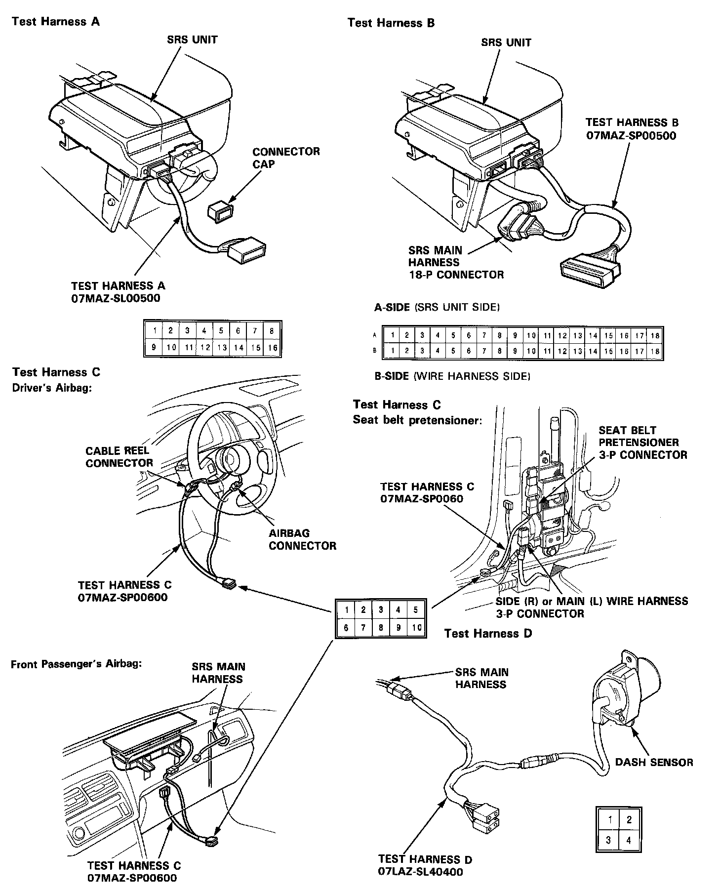

Operation CHARM
: Car repair manuals for everyone.
Home
>>
Acura
>>
1991
>>
Legend Coupe V6-3206cc 3.2L SOHC FI
>>
Repair and Diagnosis
>>
Restraints and Safety Systems
>>
Air Bag Systems
>>
Diagrams
>>
Connector Views
Connector Views

Test Harnesses and Attachment Points